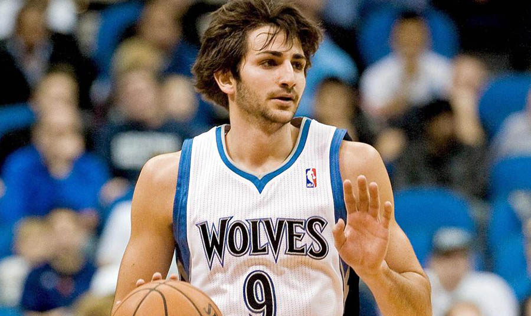
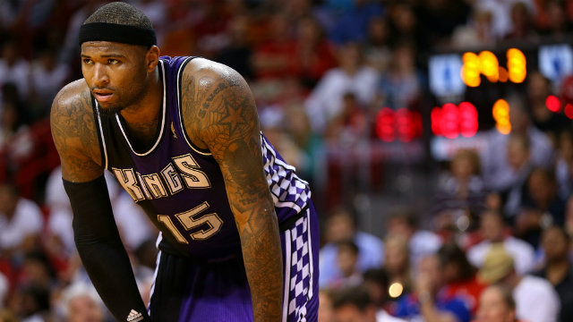
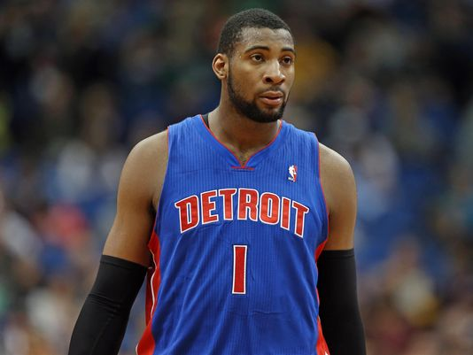

The Longest Current Playoff Droughts (Click to show content)
These teams have missed the playoffs for an extended period of time for various reasons, be it injuries, poor drafting, or lack of free agents. It must be terrible to be a fan of these teams. :'(
Minnesota Timberwolves ---------- 10 YEARS
Gone is their best player (Kevin Love), and in is a group of young, potential-filled players led by Andrew Wiggins. This drought may not end this year, but the Timberwolves have some impressive building blocks for the future.
Last Appearance: 2004

Sacramento Kings -------- 8 YEARS
The Kings are in their second year under General Manager Pete D’Alessandro and have a mix of proven veterans and talented younger players. Playing in the Western Conference will make ending this drought tough, however. Their golden time in the early 2000s has passed, leaving them with a difficult time recovering from mediocrity. They were robbed in 2002 by the referees who handed a playoff series to the more lucrative Lakers.
Last Appearance: 2006

Detroit Pistons ----- 5 YEARS
The Pistons have some impressive pieces, but it’s definitely not enough to consider them contenders. The biggest factor working in their favor is the fact that they play in the Eastern Conference where a sub-.500 record can get you into the playoffs.
Last Appearance: 2009
